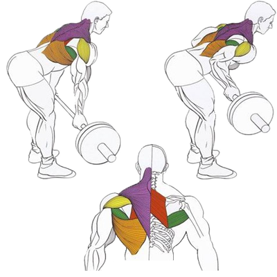

Тяга штанги в наклоне

Тяга штанги в наклоне к поясу задействует широчайшие и трапециевидные мышцы спины, а также задние дельты и бицепсы.
Исходное положение:
Встать устойчиво, ноги расставить на удобную ширину, колени слегка согнуть.
Техника выполнения:
Наклониться и, не сгибая локти, взяться за гриф прямым хватом. Выпрямиться, подняв штангу.
Наклониться вперед примерно на 30 градусов, слегка прогнувшись в пояснице, штанга находится на уровне колен. Напрячь мышцы поясницы.
Подтянуть штангу к нижней части живота, отводя локти строго назад и поднимая их как можно выше, стараясь работать мышцами спины, а не бицепсами.
Задержаться в высшей точке на 1-2 сек. и плавно вернуть штангу вниз.
Рекомендации:
Ноги и голова сохраняют неподвижное положение.
Расстояние между кистями на грифе должно быть немного больше ширины плеч.
Если в верхней точке сводить лопатки, в работу включаются ромбовидные и трапециевидные мышцы.